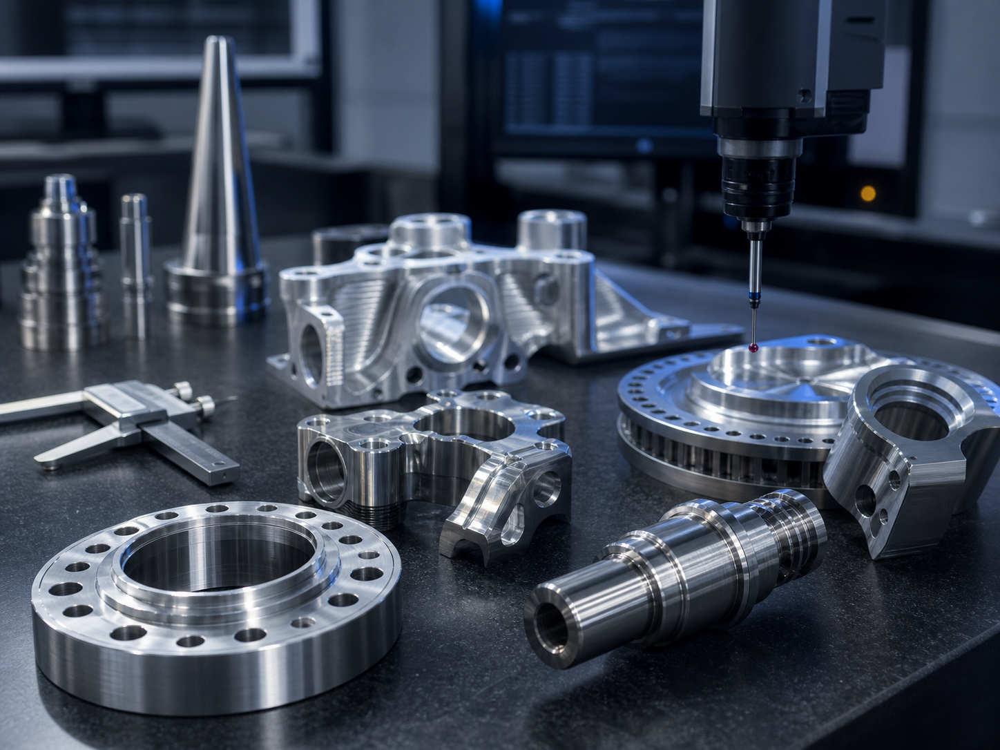
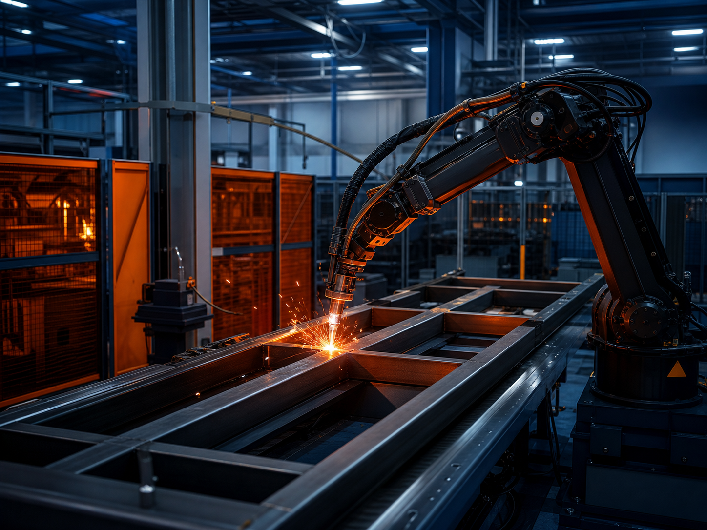

Alta precisão
Equipamentos CNC, metrologia e processos preparados para tolerâncias reduzidas.
Usinagem CNC, metalurgia e fabricação sob demanda com engenharia aplicada, controle dimensional e atendimento técnico para indústrias exigentes.
Equipamentos CNC, metrologia e processos preparados para tolerâncias reduzidas.
Inspeções dimensionais, rastreabilidade e acompanhamento técnico por etapa.
Planejamento de produção e comunicação clara do início à entrega final.
Engenharia aplicada para transformar desenho, amostra ou necessidade em solução.
Fresamento, torneamento e centros de usinagem com alta precisão.

Componentes especiais, conjuntos mecânicos e lotes sob demanda.

Estruturas metálicas, dispositivos e reformas com padrão técnico.

Desenvolvimento, melhoria e manutenção de soluções industriais.
Parque fabril preparado para peças seriadas, protótipos técnicos e componentes de alta complexidade.
Conhecer estruturaLeitura de desenho, aplicação e viabilidade produtiva.
Definição de processo, matéria-prima, ferramentas e sequência.
Execução com programação CAM e acompanhamento em produção.
Medições e inspeções conforme padrões estabelecidos.
Embalagem adequada e envio com documentação do projeto.
“A MetalCore é nossa parceira há anos. Qualidade, precisão e cumprimento de prazo são sempre impecáveis.”
Eng. Rodrigo AlmeidaCoordenador de Suprimentos“Equipe técnica preparada e atendimento muito próximo. Entregam soluções que agregam valor ao nosso processo.”
Juliana P. SantosCompradora Estratégica“Quando precisamos de peças críticas, buscamos a MetalCore pela confiabilidade e qualidade dimensional.”
Marcos TadeuGerente de EngenhariaFale com especialistas e receba um orçamento técnico com retorno rápido.